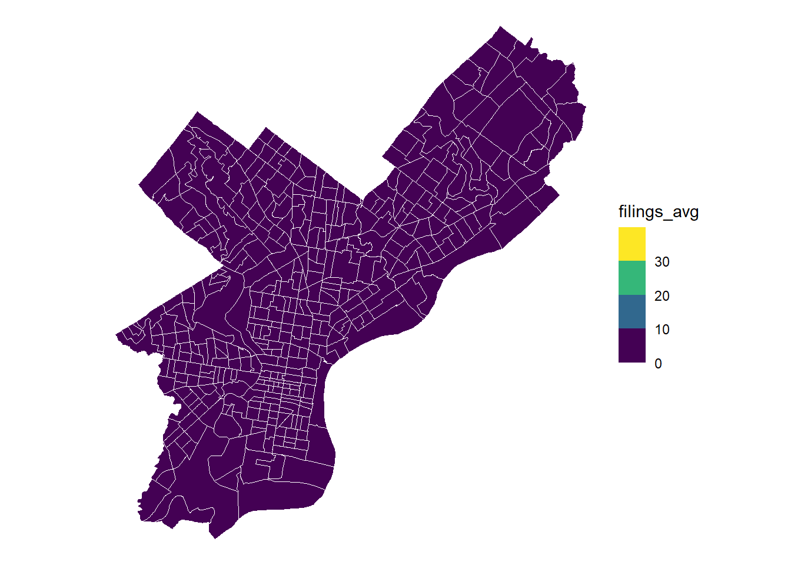
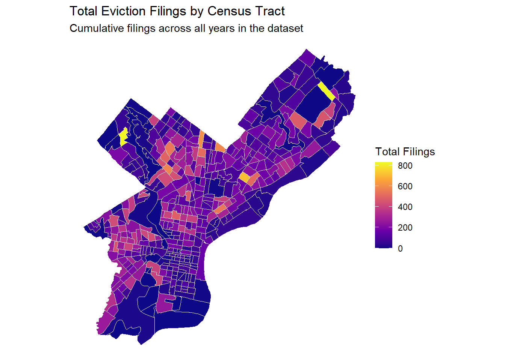
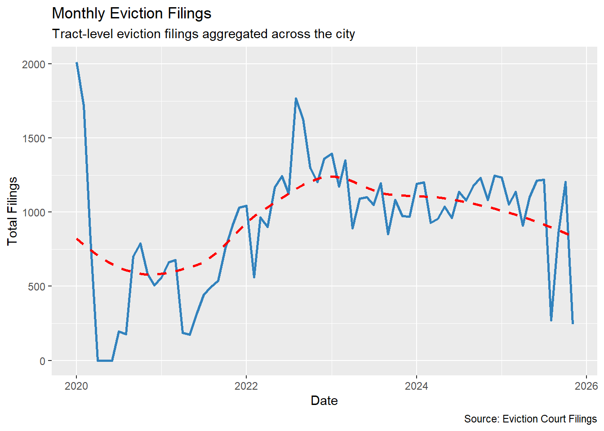
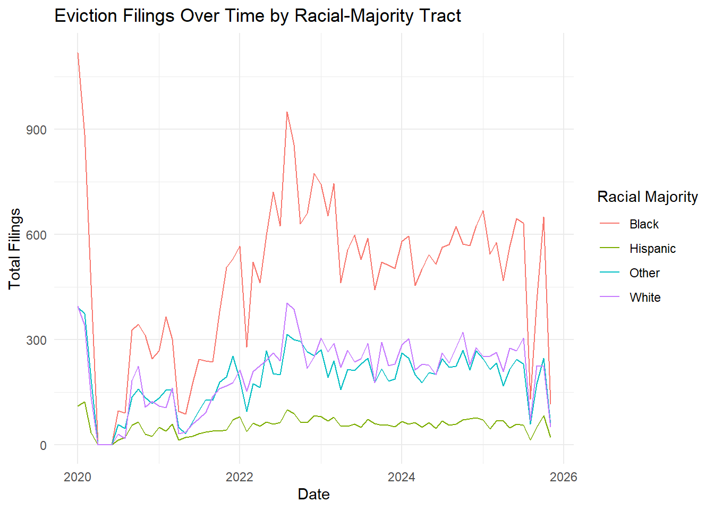
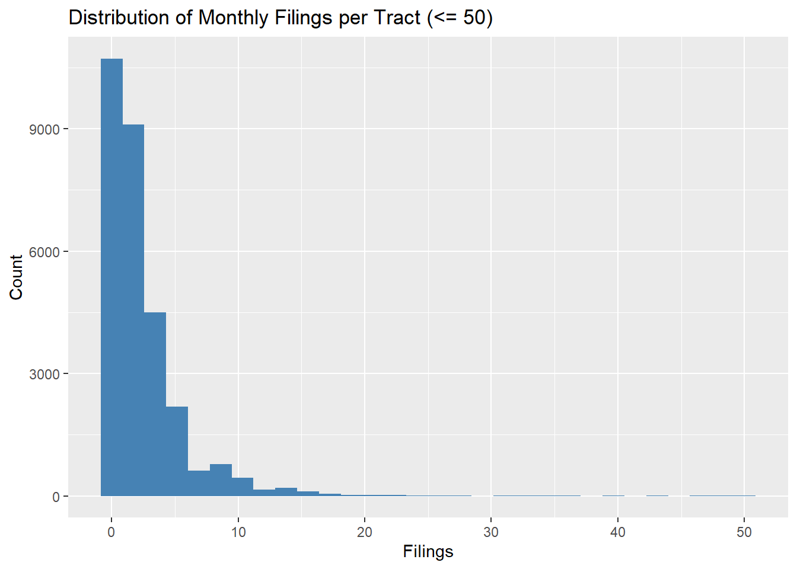
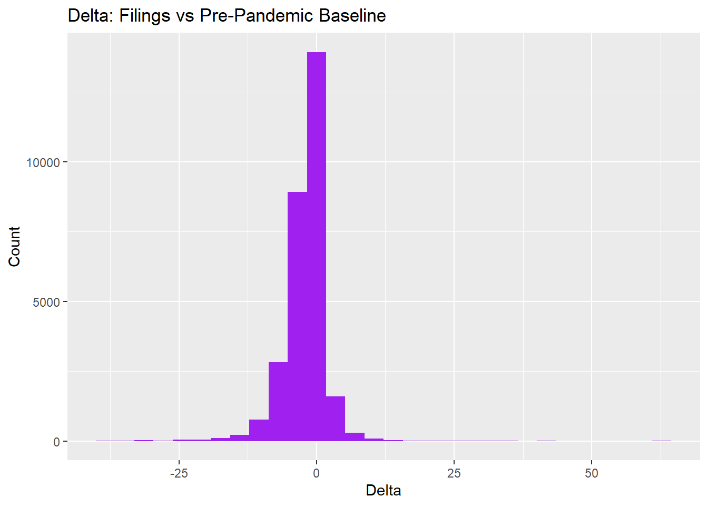
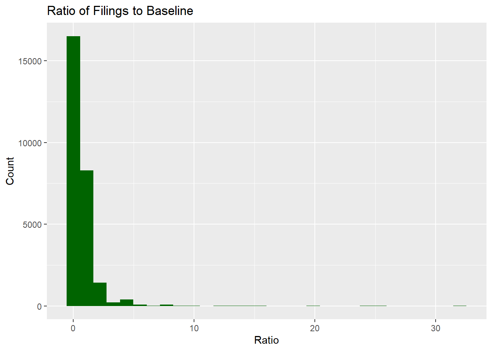

if(!require(pacman)){install.packages("pacman"); library(pacman, quietly = T)}Loading required package: pacmanp_load(lubridate,tidycensus, tidyverse, tigris, sf)if(!require(pacman)){install.packages("pacman"); library(pacman, quietly = T)}Loading required package: pacmanp_load(lubridate,tidycensus, tidyverse, tigris, sf)# load evictions dataset to investigate
evictions_df <- read_csv("./data/philadelphia_monthly_2020_2021.csv", show_col_types = F)
evictions_df <- evictions_df %>%
filter(GEOID != "sealed")# designate FIPS codes for PA and Philly
fips_pa <- 42
fips_phl <- 101
# load tigris census tract boundaries
tracts <- tracts(state = 42, county = 101, year = 2023, progress_bar = F) %>%
select(GEOID)
# join
evictions <- left_join(evictions_df, tracts, by = "GEOID", ) %>%
st_as_sf()ggplot() +
geom_sf(data = evictions, aes(fill = filings_avg),
color = "white", linewidth = 0.1) +
scale_fill_viridis_b(
limits = range(evictions$filings_avg, na.rm = TRUE),
na.value = "lightgray"
) +
theme_void()
# Create proper date format
evictions <- evictions %>%
mutate(
month_date = as.Date(paste0("01/", month), format = "%d/%m/%Y"),
delta = filings_2020 - filings_avg_prepandemic_baseline,
ratio = filings_2020 / filings_avg_prepandemic_baseline
)# Total filings per tract
tract_totals <- evictions %>%
group_by(GEOID) %>%
summarise(total_filings = sum(filings_2020, na.rm = TRUE))
#Plot
ggplot(tract_totals) +
geom_sf(aes(fill = total_filings),
color = "white", linewidth = 0.2) +
scale_fill_viridis_c(option = "C") +
labs(
title = "Total Eviction Filings by Census Tract",
subtitle = "Cumulative filings across all years in the dataset",
fill = "Total Filings"
) +
theme_void()
# Top 10 Tracts - Eviction Filing Hotspots
tract_totals %>%
arrange(desc(total_filings)) %>%
slice_head(n = 10)Simple feature collection with 10 features and 2 fields
Geometry type: POLYGON
Dimension: XY
Bounding box: xmin: -75.23818 ymin: 39.98688 xmax: -74.98002 ymax: 40.10815
Geodetic CRS: NAD83
# A tibble: 10 × 3
GEOID total_filings geometry
<chr> <dbl> <POLYGON [°]>
1 42101036100 831 ((-75.00164 40.1048, -75.0015 40.10468, -75.00137 …
2 42101021800 827 ((-75.23818 40.05977, -75.23735 40.05866, -75.2373…
3 42101030100 713 ((-75.09441 40.01953, -75.09335 40.01898, -75.0923…
4 42101026800 608 ((-75.14384 40.05077, -75.14359 40.05074, -75.1422…
5 42101027200 590 ((-75.12357 40.04499, -75.12281 40.04489, -75.1221…
6 42101024000 579 ((-75.18546 40.02887, -75.18475 40.02829, -75.1842…
7 42101025200 548 ((-75.1828 40.04707, -75.1822 40.04589, -75.1817 4…
8 42101017800 545 ((-75.12549 39.98984, -75.12438 39.98882, -75.1233…
9 42101027600 518 ((-75.14457 40.03984, -75.14349 40.0397, -75.14339…
10 42101030000 508 ((-75.08638 40.01526, -75.08552 40.01479, -75.0846…# Bottom 10 Tracts
tract_totals %>%
arrange(total_filings) %>%
slice_head(n = 10)Simple feature collection with 10 features and 2 fields
Geometry type: POLYGON
Dimension: XY
Bounding box: xmin: -75.25351 ymin: 39.87238 xmax: -75.12952 ymax: 40.08602
Geodetic CRS: NAD83
# A tibble: 10 × 3
GEOID total_filings geometry
<chr> <dbl> <POLYGON [°]>
1 42101036901 0 ((-75.20784 39.94129, -75.2071 39.94128, -75.20686…
2 42101980001 0 ((-75.20442 39.98317, -75.20183 39.98036, -75.1986…
3 42101980003 0 ((-75.18706 39.9553, -75.18536 39.95508, -75.18516…
4 42101980100 0 ((-75.23294 40.08359, -75.2329 40.08346, -75.23283…
5 42101980400 0 ((-75.25346 39.87601, -75.25322 39.876, -75.25302 …
6 42101980500 0 ((-75.14721 40.01496, -75.14671 40.01492, -75.1466…
7 42101980600 0 ((-75.18339 39.90662, -75.17414 39.90543, -75.1739…
8 42101980701 0 ((-75.17496 39.89849, -75.17486 39.89847, -75.1740…
9 42101980902 0 ((-75.20743 39.93351, -75.2066 39.93333, -75.20495…
10 42101980903 0 ((-75.2039 39.93285, -75.20239 39.9325, -75.20048 …# Create monthly evictions
eviction_monthly <- evictions %>%
group_by(month_date) %>%
summarise(total_filings = sum(filings_2020, na.rm = TRUE))
# Plot total monthly evictions
ggplot(eviction_monthly, aes(x = month_date, y = total_filings)) +
geom_line(color = "#3182bd", linewidth = 1) + # blue line
geom_smooth(se = FALSE, color = "red", linetype = "dashed") + # red trend line
labs(
title = "Monthly Eviction Filings",
subtitle = "Tract-level eviction filings aggregated across the city",
x = "Date",
y = "Total Filings",
caption = "Source: Eviction Court Filings"
)`geom_smooth()` using method = 'loess' and formula = 'y ~ x'
evictions %>%
group_by(month_date, racial_majority) %>%
summarise(total_filings = sum(filings_2020, na.rm = TRUE), .groups = "drop") %>%
ggplot(aes(month_date, total_filings, color = racial_majority)) +
geom_line() +
labs(title = "Eviction Filings Over Time by Racial-Majority Tract",
x = "Date", y = "Total Filings",
color = "Racial Majority") +
theme_minimal()
# Create monthly evictions
# Filings_2020 = total eviction filings
ggplot(evictions %>% filter(filings_2020 <= 50),
aes(filings_2020)) +
geom_histogram(bins = 30, fill = "steelblue") +
labs(title = "Distribution of Monthly Filings per Tract (<= 50)",
x = "Filings", y = "Count")
# Distribution of Delta
ggplot(evictions, aes(delta)) +
geom_histogram(bins = 30, fill = "purple") +
labs(
title = "Delta: Filings vs Pre-Pandemic Baseline",
x = "Delta",
y = "Count"
)
# Distribution of Ratio
ggplot(evictions, aes(ratio)) +
geom_histogram(bins = 30, fill = "darkgreen") +
labs(
title = "Ratio of Filings to Baseline",
x = "Ratio",
y = "Count"
)Warning: Removed 1888 rows containing non-finite outside the scale range
(`stat_bin()`).
evictions %>%
group_by(racial_majority) %>%
summarise(mean_filings = mean(filings_2020, na.rm = TRUE)) %>%
ggplot(aes(racial_majority, mean_filings, fill = racial_majority)) +
geom_col() +
labs(
title = "Average Monthly Eviction Filings by Racial-Majority Tract",
x = "Racial Majority Group",
y = "Average Monthly Filings"
) +
theme_minimal() +
theme(legend.position = "none")